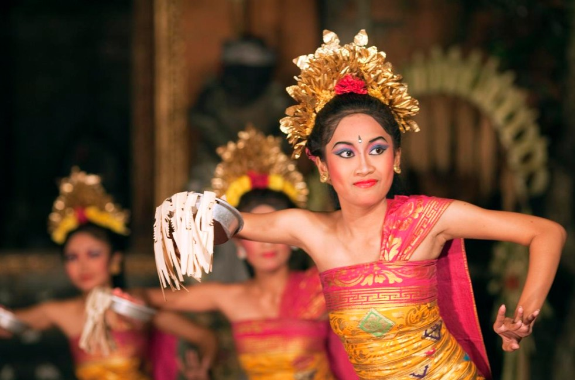

Budaya Indonesia
Warisan Bangsa yang Kaya dan Beragam

Budaya Indonesia merupakan warisan tak ternilai yang terbentuk dari keberagaman suku, agama, ras, dan adat istiadat yang tersebar di seluruh penjuru Nusantara. Dengan lebih dari 17.000 pulau, 1.300 lebih suku bangsa, dan ratusan bahasa daerah, Indonesia dikenal sebagai salah satu negara dengan kekayaan budaya terbesar di dunia.
Budaya Indonesia tidak hanya tercermin dalam bentuk tari-tarian tradisional, musik daerah, pakaian adat, rumah tradisional, hingga upacara adat, tetapi juga dalam nilai-nilai kehidupan masyarakat yang menjunjung tinggi gotong royong, toleransi, dan kebersamaan.
Tari Saman di Asian Games 2018:
Simbol Persatuan dalam Keindahan Gerak
Pada pembukaan Asian Games 2018 yang diadakan di Jakarta–Palembang, dunia disuguhkan penampilan megah dari Tari Saman, salah satu warisan budaya Indonesia yang berasal dari Aceh. Ditampilkan secara kolosal oleh lebih dari 1.600 penari, Tari Saman berhasil mencuri perhatian internasional berkat kekompakan gerak, kecepatan ritme, dan kekuatan visual yang menggambarkan semangat kebersamaan. Tarian ini dipilih karena mencerminkan nilai-nilai universal seperti kerja sama, persatuan, dan disiplin—yang sejalan dengan semangat Asian Games sebagai ajang olahraga dan persahabatan antarbangsa.
Lebih dari sekadar pertunjukan seni, penampilan Tari Saman di ajang internasional ini menjadi simbol kuat dari identitas budaya Indonesia yang dinamis dan membanggakan. Gerakan serempak tanpa iringan alat musik, hanya dengan suara vokal dan tepukan tubuh, menciptakan suasana magis yang menekankan pentingnya harmoni dalam keberagaman. Momen ini tak hanya menunjukkan kekayaan budaya Nusantara kepada dunia, tetapi juga menumbuhkan rasa bangga dan cinta terhadap budaya sendiri, khususnya di kalangan generasi muda.